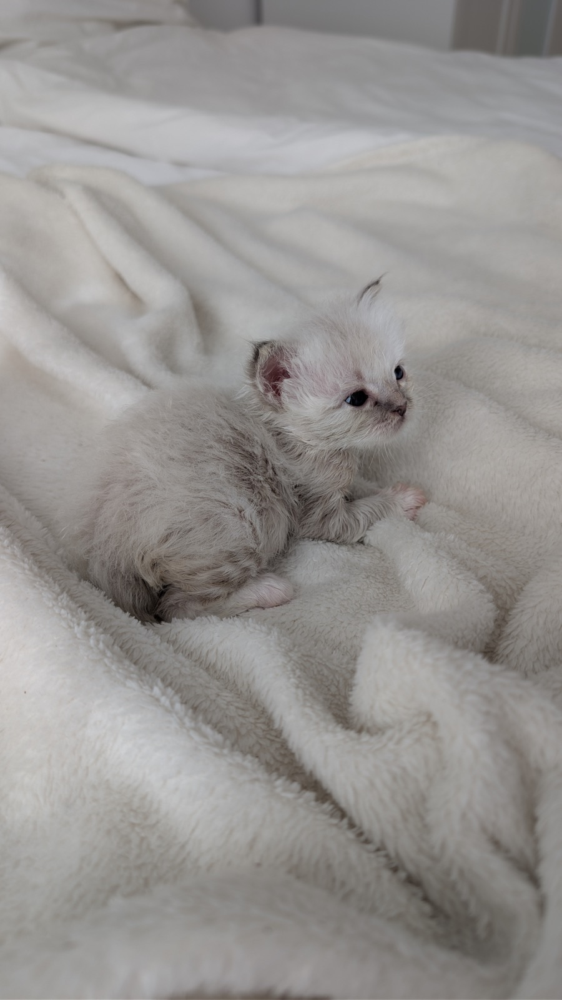
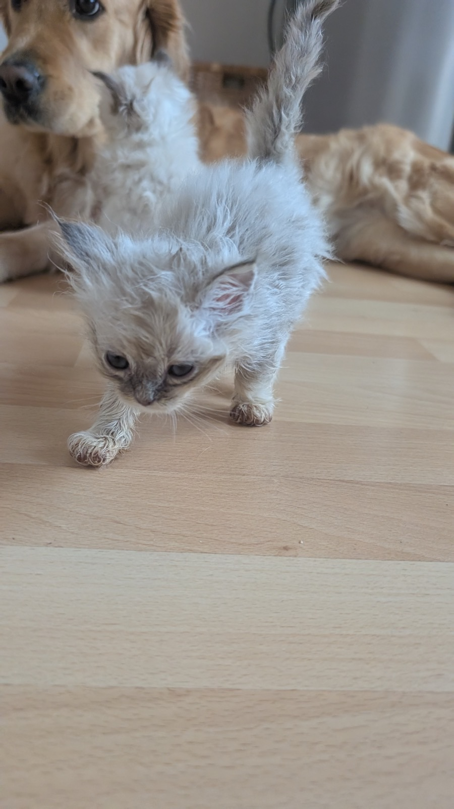
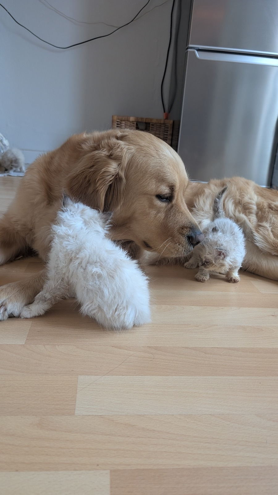
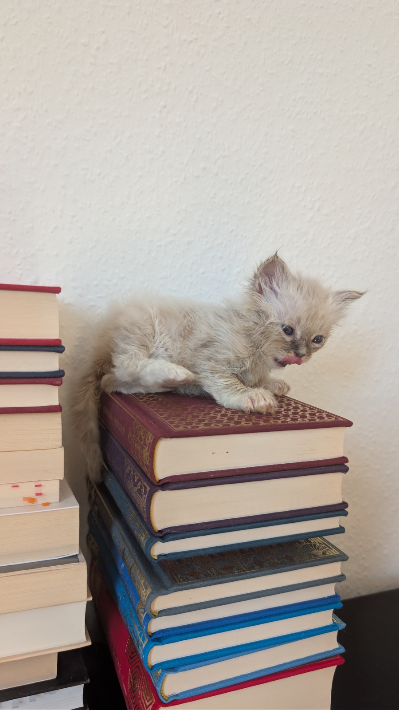
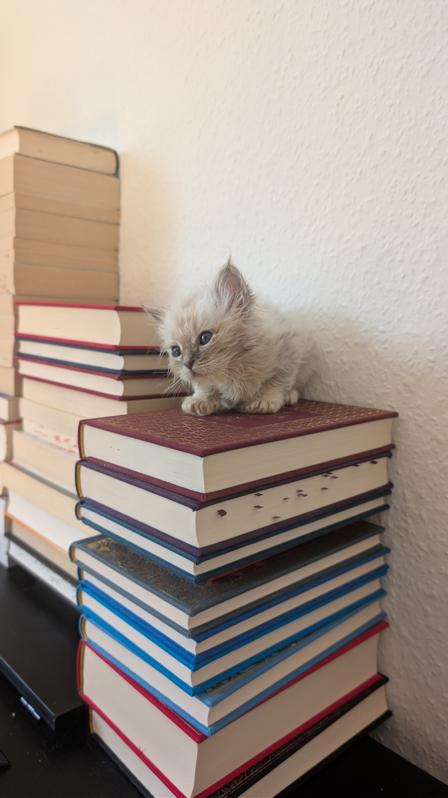
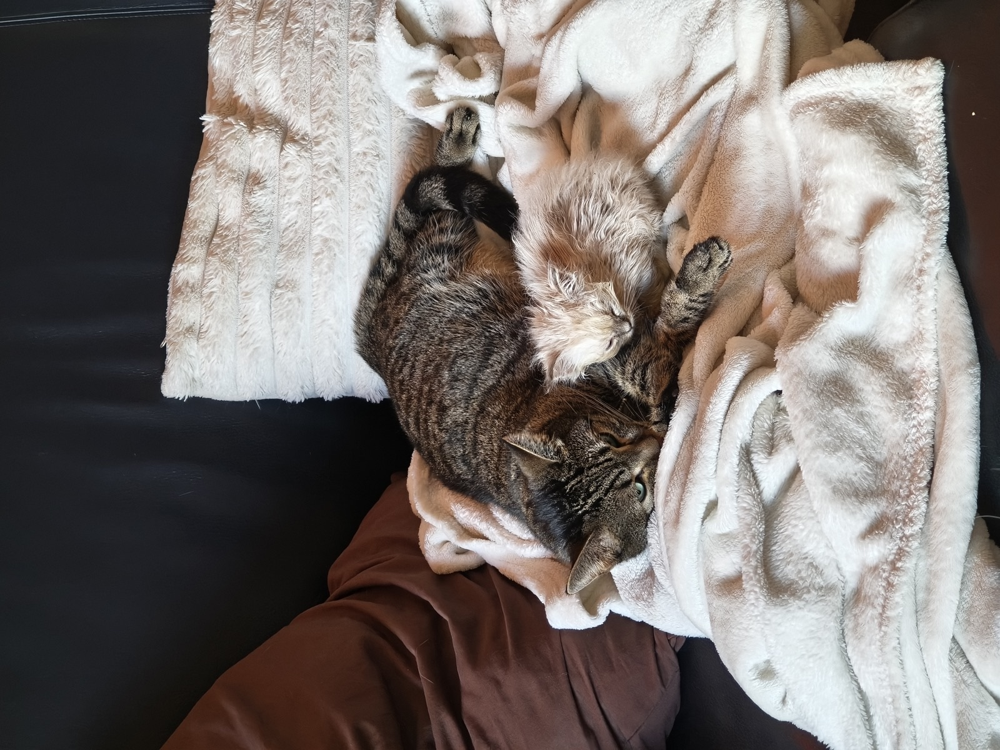

Ash
Männchen · Blue Silver Tabby Point
Adoptéiert
Vum klengsten Zwerg vum Wuerf zum onbestriddene Chef vun der ganzer Band! Den Ash hält seng Geschwëster gutt op Trab, a soubal och nëmmen en Hauch vu Mëllechgeroch an der Loft läit, gëtt et kee Stopp méi.
Nieft sengem formidabele Charakter ass hien och e richtege Bléckfänger: Als Blue Silver Tabby Point blénkt säi Fell an engem atemberaubende Sëlwergro. Dëse klenge Rackert sicht dréngend e Spillkomerod op Aenhéicht!
Dës kleng Rakéit brauch op jidde Fall een, deen esou vill Loscht op Tollen a Spille huet wéi hien!